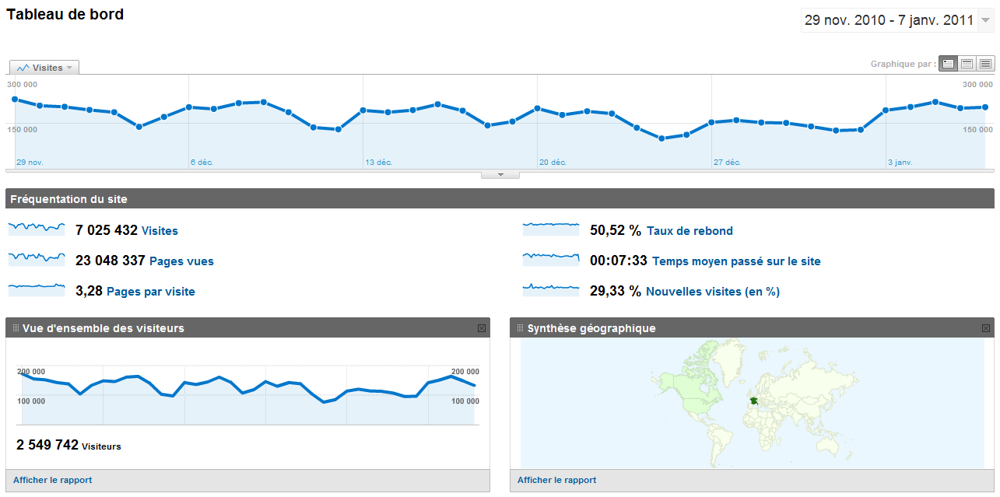
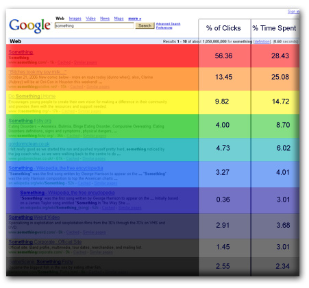
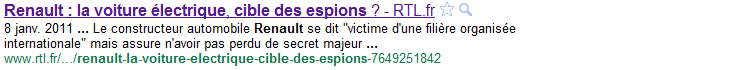
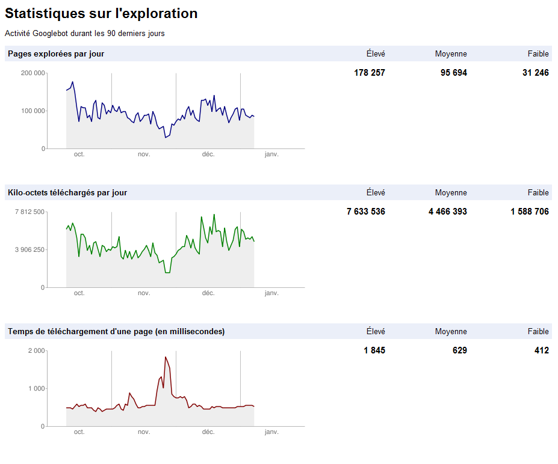
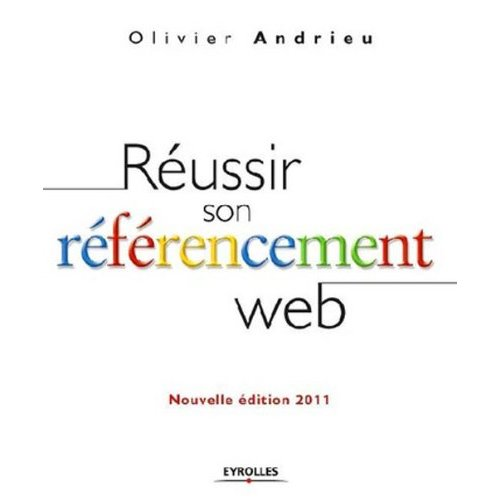

Audience
Il existe beaucoup de mesures possibles liées à l'audience d'un site.
En voici quelques unes.
Connaitre le volume et la structure de son trafic donne des informations essentielles sur son site.
http://en.wikipedia.org/wiki/Web_traffic
La collecte de données de trafic se fait grâce à des trackers présents dans les pages.
Un tracker est souvent un insert javascript et un peu de code afin de le paramétrer.
<script src="http://domaine.du.tracker/tracker.js"></script> <script type="text/javascript"> _tracker.trackThisPage(); </script>
La position du tracker dans la page est importante puisque le navigateur éxécute le javascript au fur et à mesure de se lecture du code source.
Parmis les technologie de tracking, on peut citer :
Le tracker google analytics a la forme suivante.
<!-- google analytics --> <script type="text/javascript"> var _gaq = _gaq || []; _gaq.push(['_setAccount', 'UA-XXXXXXX']); // id compte _gaq.push(['_setDomainName', '.mondomain.fr']); // domains dns _gaq.push(['_trackPageview']); // ce que l'on veut tracker (function() { var ga = document.createElement('script'); ga.type = 'text/javascript'; ga.async = true; ga.src = ('https:' == document.location.protocol ? 'https://ssl' : 'http://www') + '.google-analytics.com/ga.js'; var s = document.getElementsByTagName('script')[0]; s.parentNode.insertBefore(ga, s); })(); </script>
Ce qui génère les 2 requêtes suivantes vers les serveur de google.
http://www.google-analytics.com/ga.js http://www.google-analytics.com/__utm.gif?utmwv=4.8.6&utmn=...
Voici un tableau de bord pour une période du 29 novembre 2010 au 7 janvier 2011
Google analytics mesure beaucoup de critères et propose en conséquence un nombre important de rapports.
Le référencement vise à augmenter son trafic en augmentant les points d'entrée vers son site.
Il existe plusieurs techniques comme l'amélioration du référencement naturel, le référencement payant et l'échange de liens
L'amélioration du référencemeent naturel est appelé SEO (Search engine optimization)
La stratégie d'achat de liens sponsorisés sur les moteurs de recherche est appelé SEM (Search engine marketing)
Le référencement naturel est la capacité à être dans les premiers résultats d'un moteur de recherche.
Plusieurs facteurs sont pris en compte afin de calculer l'ordre des résultats, parmis ceux ci :
La pertinence par rapport à la recherche.
La popularité du site via un équivalent du PageRank.
Des ingrédients secrets pour chaque moteur de recherche.
Il est donc important de définir les mots clés sur lesquels on souhaite être référencé et de viser a être mieux référencé que ses concurrents sur ce segment.
Google trends permet de savoir quels sont les mots clés qui fonctionnent le mieux.
http://www.seoresearcher.com/distribution-of-clicks-on-googles-serps-and-eye-tracking-analysis.htm
L'optimisation pour les moteurs de recherche (SEO) est un ensemble de techniques visant à favoriser la compréhension de la thématique et du contenu d'une ou de l'ensemble des pages d'un site Web par les moteurs de recherche.
Comme une bonne partie des algorithmes des moteurs de recherche sont secrets, il s'agit d'un travail itératif, basé sur la mesure de résultats.
Malgré l'incertitude, il existe des bonnes pratiques lors du développement de sites webs.
Nous allons voir quelques unes de ces techniques.
http://en.wikipedia.org/wiki/Search_engine_optimization
Le crawling est la visite régulière des sites par des robots (ou spiders) afin de les indexer.
Le fichier robots.txt, à la racine d'un site, permet d'autoriser ou interdire le parcours de certaines zones du site. par exemple robots.txt sur lemonde.fr
User-agent: * Disallow: /mon-repertoire/
La balise meta robots indique comment traiter la page.
<meta name="robots" content="index,follow">
La balise link canonical donne l'url canonique dans le cas ou un contenu peut être accédé par plusieurs urls. Cela évite que la page soit marquée comme un contenu dupliqué.
<meta rel="canonical" href="http://mydomain.fr/bonne-url">
Les principaux robots sont Googlebot, MsnBot (Microsoft), Slurp (Yahoo!) et Exabot (Exalead)
L'url est un élément important afin d'être bien référencé, elle doit être porteuse de sens.
Certains sites proposent encore des urls vides de sens, construites à partir d'éléments techniques.
http://joomlacode.org/gf/project/jea/forum/ ?action=ForumBrowse&forum_id=8179&_forum_action=ForumMessageBrowse&thread_id=19498
Les urls sont interprétées par les moteurs de recherche. Le séparateur de mot est le tiret (-).
Une url doit être lisible, construite comme un élément d'une arborescence de répertoires. Il est pratique de pouvoir taper une url à la main.
Une bonne pratique est de construire des arborescence cohérentes et d'utiliser des identifiants de type slugs (wordpress) à la place d'identifiants numériques ou techniques.
http://monsite.fr/une-categorie/le-titre-de-mon-article
Si le référencement dans google news est souhaité, il faut que l'url comporte une séquence de 3 chiffres minimum.
Au sein d'une page, l'élément le plus important est le contenu texte. Une structure html simple et un contenu texte riche est le premier levier de référecement. La balise h1 est très importante.
Dans le header de la page, les balises meta title et description sont très importantes.
<title>titre de l'article - monsite.fr</title> <meta name="description" content="accroche de l'article" /> <meta name="keywords" content="mots clés" />
Cela se retrouve directement dans les résultats de recherche.
La balise meta keywords est beaucoup moins importantes mais contribue néanmoins.
<meta name="keywords" content="mots clés" />
La syndication de contenu web est la mise à disposition d'un contenu propre à un site afin qu'il puisse être utilisé par d'autres services.
Les services peuvent être des aggrégateurs, des partenaires ou bien même des tiers inconnus.
L'intérêt pour la source est d'augmenter son trafic en offrant de nouveaux points d'entrée.
Les formats de syndication les plus courant sont les format RSS et ATOM
http://fr.wikipedia.org/wiki/RSS
Le format RSS est très simple à comprendre.
<?xml version="1.0" encoding="iso-8859-1"?>
<rss version="2.0">
<channel>
<title>Mon site</title>
<description>Ceci est un exemple de flux RSS 2.0</description>
<lastBuildDate>Sat, 07 Sep 2002 00:00:01 GMT</lastBuildDate>
<link>http://www.example.org</link>
<item>
<title>Actualité N°1</title>
<description>Ceci est ma première actualité</description>
<pubDate>Sat, 07 Sep 2002 00:00:01 GMT</pubDate>
<link>http://www.example.org/actu1</link>
</item>
...
</channel>
</rss>
Il est possible depuis une page web, d'indiquer la disponibilité d'un flux RSS
<link rel="alternate" type="application/rss+xml"
href="/flux.rss" title="description du flux" />
http://fr.wikipedia.org/wiki/RSS
Le sitemap est un format XML (ou texte) permettant de mettre en avant ses contenus pour les moteurs de recherche et google news.
C'est particulièrement pratique dans le cas où certains contenus sont difficilement accessibles par ailleurs.
<?xml version="1.0" encoding="utf-8"?> <urlset xmlns="http://www.sitemaps.org/schemas/sitemap/0.9"> <url> <loc>http://example.com/1</loc> <lastmod>2006-11-18</lastmod> <changefreq>daily</changefreq> </url> ... </urlset>
Une fois créé le sitemap peut être indiqué dans le robots.txt ou soumis directement aux moteurs de recherche.
Sitemap: <sitemap_location>
http://en.wikipedia.org/wiki/Sitemaps
Les opérateurs de moteur de recherche proposent des outils afin d'aider les propriétaire de sites a comprendre comment le site est vu par le robot d'exploration.
Voici par exemple un des rapports de google webmaster tools
Pour aller plus loin :
Un guide pratique sur le référencement en 20 conseils
Le livre de référencement en français de Olivier Andrieu
